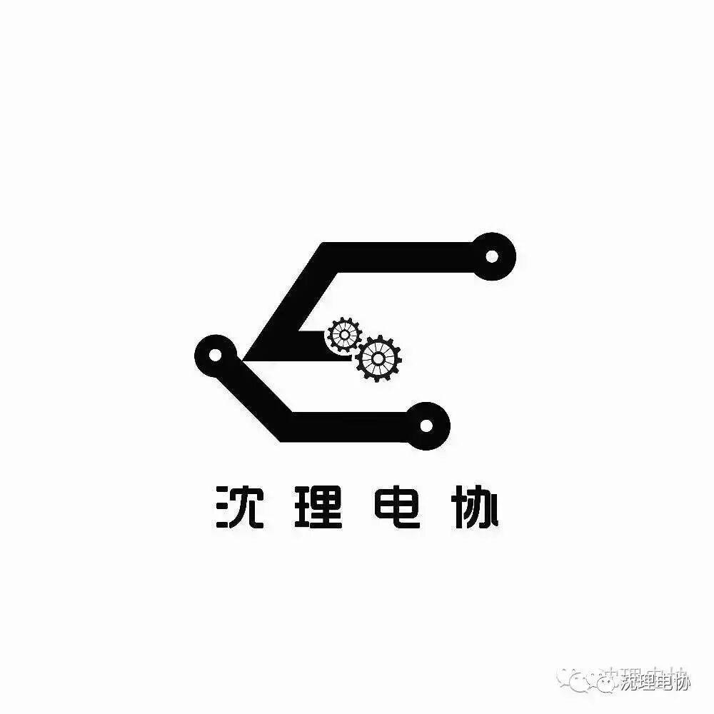

娱乐圈 | 愿那些美好常伴汝身
12月27日，本兮工作室发讣告，表示本兮于2016年12月24日因故离世。本兮最后一条微博于12月21日发布，近期还在发布新歌，并参与直播。本兮，原名马晓晨，1994年6月30日出生于新疆奎屯，中国内地女歌手。 2009年，开始于网络发布个人原创作品。12月21日还发布了新歌《别闹》。

讣告：我们最亲爱的本兮于2016年12月24日因故离世，享年22岁。谨此讣告。本兮是90后创作才女，包揽词曲唱的很多歌曲都倍受好评。本兮在工作和生活中都非常积极乐观、阳光向上。她热爱音乐，是快乐的音乐精灵，通过歌声传递爱和温暖。她的才华、她的歌声都是独一无二的存在，会永远让喜爱她的家人、朋友和歌迷铭记、思念。此前再多的语言都显得苍白无力，只希望本兮一路走好，在天国继续音乐之旅！
本兮从小喜欢音乐。2008年的《怎么办我爱你》还记得是每个追求潮流的小女生必备。直到《未成年》与《奇怪，我不懂得爱》，好像是青春期的象征。近日，音乐小魔女本兮2016年全新原创专辑《一个人的女团》第三波EP《小明是个画家》预告照惊喜曝光，预告照搭档鹦鹉花样秀青春，官方工作室宣布此张EP同名主打将于12月8日正式发布。
自9月27日专辑首支单曲《翻篇》上线，本兮持续发力，接连发布《暗恋故事情节》、《安静的夜》、《下雪的季节》等六首新专辑歌曲，且均登顶某音乐平台当期新歌榜前三位置，获得业内外良好口碑和颇高的粉丝传唱度。
从《翻篇》到《下雪的季节》，六首歌曲六种风格，本兮的每一次发声都是一次改变。《小明是个画家》还未正式发布，就引起各路音乐人和粉丝的好奇：这首被称为“裹着粉红色糖衣的黑色幽默歌曲”到底以一种怎样的方式引爆小明与画家这一神奇组合的化学反应，又是以一种怎样的方式再次刷新大家对本兮的认知。
如今，佳人已逝，愿逝者安息，愿我们曾经深爱的你，在天国也能做一只歌唱的灵鸟，在天国自由的歌唱。

编辑：关聪
（部分图文转载自网络）

别光看，
赶紧长按关注呀！